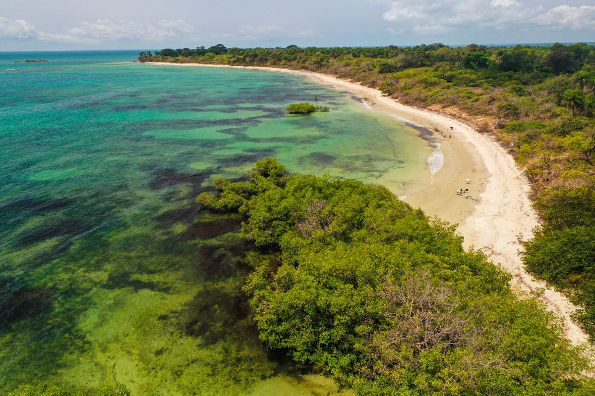
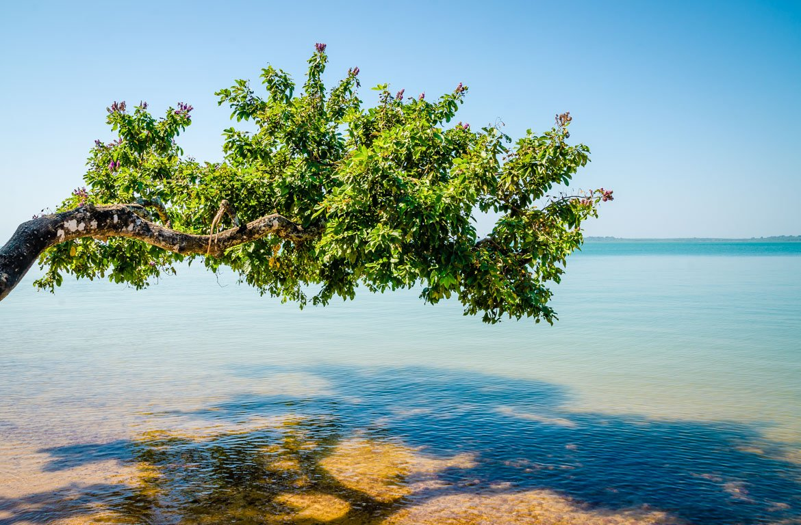
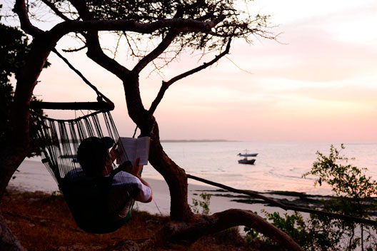
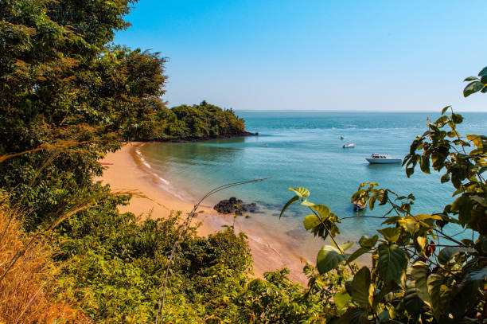
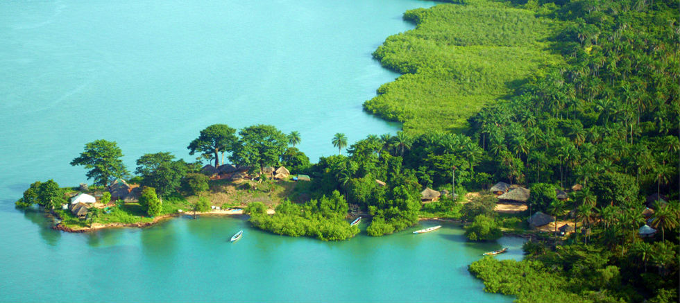

O turrismo é deslocamento temporário de pessoas para fora de sua residencia habitual, com o motivo de fazer, negócios ou cultua, envolvendo as atvidades realizada e as despesas gerais, sendo crucial para o desenvolvimentoeconómico, social e cultural, gerando empregos, volorezado culturas locais e promovendo a troca entre visitantes e comunidades, com objetivos de proporcionar experiêcnia, conheciento e crescimento sustentável para o destino e seus habitantes.
Definição:é um fenomino social, cultural e económico que envolve viagens e estadias em locais diferente do habitalpor até um ano, com finalidades como lazer,negócios, saúde ou estudos, segundo a organização Mundial do turrismo(OMT).

o turrismo na Guiné-Bissau foca-se em natureza e cultura, destacando-se o Arquipélogo dos Bijagos (praias, faura exótica, hipopótamo na inha de Irango) e a capital Bissau, com sua arquitetura e coloniale mercados. o pais oferece ecotursimo, pesca despotiva, rica diversidade étnica músicas danças tradicionais e um Carnaval vibrante, visando um desenvolcimento sustentávele inclusivo, apeser de necessitar de mais infraestruturas.

Ilhas Bijagos: um arquipelágo de beleza natural, com praias paradisíacas, águas cristalina e vida selvagem única, com os hipopótamos de Orango.


Natureza e parques: além dos Bijagós, há florestas sagradas e praias como Varela, além do Parque Marinho João Vieira e Poilão